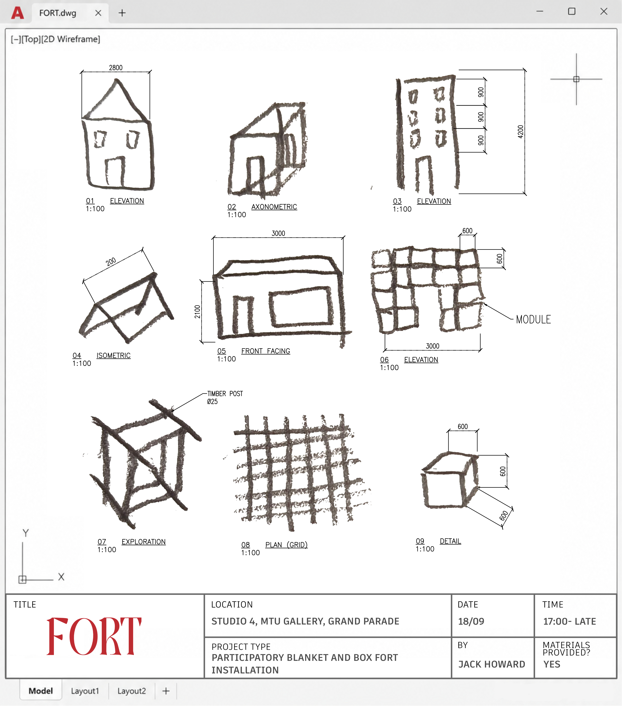

FORT
Returning to one of our earliest acts of architecture: making a place together.
Delivered
The question
What happens when adults return to the first kind of space many of us ever made for ourselves?
My contribution
Concept development, spatial design, material planning, fabrication and live facilitation.
The result
A temporary architecture designed to be completed, altered and inhabited collectively over one evening.
FORT is a participatory spatial installation developed for Culture Night Cork 2026 at MTU Crawford College of Art & Design. It began with a simple idea: the blanket fort as one of our earliest experiences of making architecture.
Before plans, drawings or professional language, a fort teaches us that a sheet can become a wall, a chair can become structure and a gap can become a doorway. It is an intuitive way of understanding enclosure, threshold, shelter and ownership through play.
FORT brought that act back into an adult setting. The installation began as an intentionally unfinished soft architecture of pale fabric, timber, cord and simple fixings. Rather than presenting a finished object to look at, it left room for visitors to build, alter, inhabit and leave their mark on the space.
The project treats participation as a spatial material in its own right. Its final form was never meant to belong to one designer; the architecture was designed to change through collective use.
- Location
- MTU Crawford College of Art & Design
Cork, IE - Year
- 2026
- Type
- Participatory spatial installation
- With
- Culture Night Cork
MTU Crawford College of Art & Design
The starting point was nostalgia, but the project was not intended as a recreation of childhood. The fort became a way to ask how play changes our relationship with space when the usual rules are loosened.
Its deliberately open structure allowed thresholds, passages and small rooms to appear and disappear as the installation changed. The materials were familiar and low-tech so that making felt immediate rather than precious: fabric, cord, timber, cushions and simple attachment points.
That incompleteness was important. Instead of participation being added after the design was finished, the missing pieces were the invitation.
FORT sits between installation, soft architecture and collective making. The role of the designer was to establish enough structure for people to understand the invitation, while leaving enough ambiguity for the space to become something else in their hands.
It is part of an ongoing interest in spaces that do not only accommodate people, but give them permission to affect what happens there.
Interested in a participatory installation or collaborative spatial project?
Explore art + collaboration